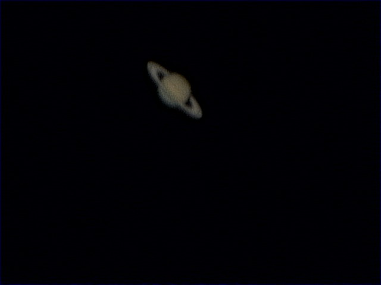
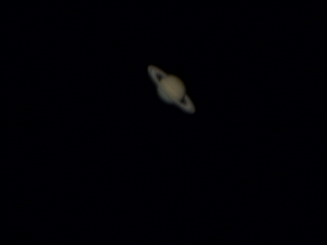
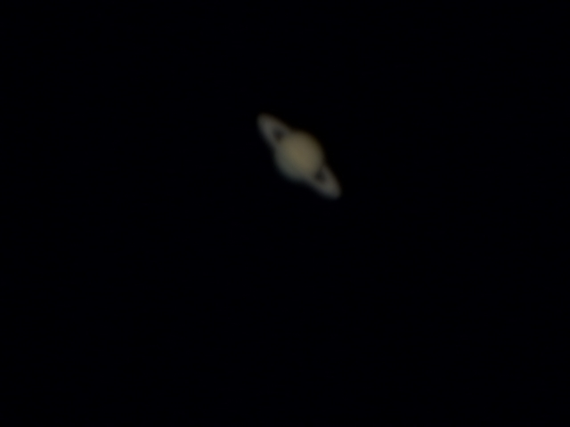
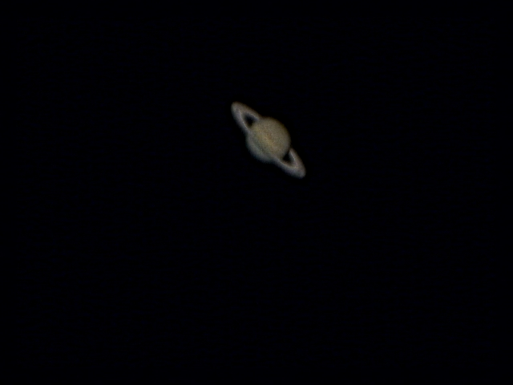

Saturn mit der ToUCam Pro II
Alle Bilder sind mit einem fünf Zoll Celestron Spiegelteleskop mit 2x Barlowlinse auf parallaktischer Montierung vom 11.1.07 aus Praunheim, Frankfurt gemacht. Kamera war eine Philips ToU Cam Pro II die mittels GIOTTO angesteuert wurde. Die Belichtungszeit betrug etwa 1/25 s. Nachbearbeitet wurden die Bilder mit GIOTTO und REGISTAX.
von Moritz Greif
--------------------------------------------------------------------



...und hier das beste Bild, man erkennt Wolkenstrukturen, und mit Phantasie den Hauch eines Schimmers der Cassini-Teilung.....Das Bild ist aus 56 Bildern gemittelt und dann etwas geschärft :

For all pictures: copyright 2007 by Moritz Greif/Astro-AG Liebigschule